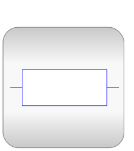
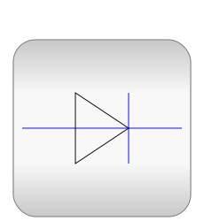

This package contains packages for electrical multiphase
components, based on Modelica.Electrical.Analog:
- Basic: basic components (resistor, capacitor, inductor,
...)
- Ideal: ideal elements (switches, diode, transformer, ...)
- Sensors: sensors to measure potentials, voltages, and
currents
- Sources: time-dependent and controlled voltage and current
sources
This package is intended to be used the same way as
Modelica.Electrical.Analog but to make design of multiphase models
easier.
The package is based on the plug: a composite connector containing
m pins.
It is possible to connect plugs to plugs or single pins of a plug
to single pins.
Potentials may be accessed as plug.pin[].v, currents
may be accessed as plug.pin[].i.
Further development:
- temperature-dependent resistor
- lines (m-phase models)
- Main Authors:
- Anton Haumer
Technical Consulting & Electrical Engineering
A-3423 St.Andrae-Woerdern
Austria
email: a.haumer@haumer.at
- Release Notes:
-
- v1.0 2004/10/01 Anton Haumer
- Copyright:
- Copyright © 1998-2013, Modelica Association and Anton
Haumer.
The Modelica package is free software; it can be
redistributed and/or modified under the terms of the Modelica
license, see the license conditions and the accompanying
disclaimer in the documentation of package Modelica in file
"Modelica/package.mo".
Contents
| Name |
Description |
 Examples Examples |
Multiphase test examples |
|  Basic |
Basic components for electrical multiphase models |
|  Ideal |
Multiphase components with idealized behaviour |
 Blocks Blocks |
Blocks for multi phase systems |
| Functions |
Functions for multi phase systems |
 Sensors Sensors |
Multiphase potential, voltage and current Sensors |
 Sources Sources |
Multiphase voltage and current sources |
 Interfaces Interfaces |
Interfaces for electrical multiphase models |
- v1.0 2004/10/01 Anton Haumer
- v1.1 2006/01/12 Anton Haumer
added Sensors.PowerSensor
- v1.2 2006/07/05 Anton Haumer
removed annotation from pin of Interfaces.Plug
corrected usage of resistance/conductance
- v1.3.0 2007/01/23 Anton Haumer
improved some icons
- v1.3.1 2007/08/12 Anton Haumer
improved documentation
- v1.3.2 2007/08/24 Anton Haumer
removed redeclare type SignalType
- v1.4.0 2009/08/26 Anton Haumer
added conditional HeatPorts as Electrical.Analog
added switches with arc as Electrical.Analog
Generated at 2014-02-11T19:03:12Z by OpenModelica1.9.1+dev (r19045) (RML
version)